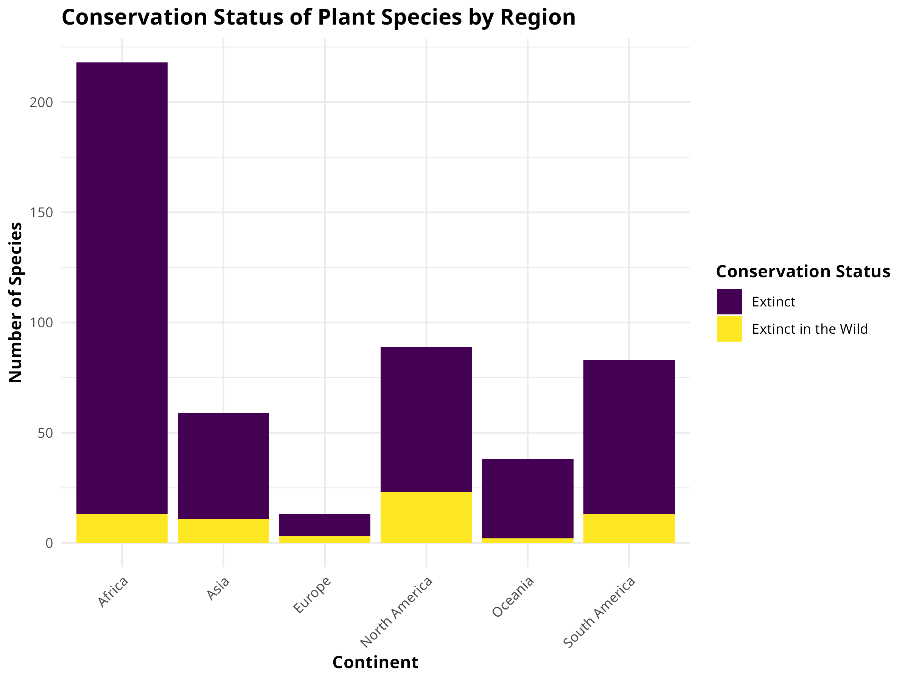
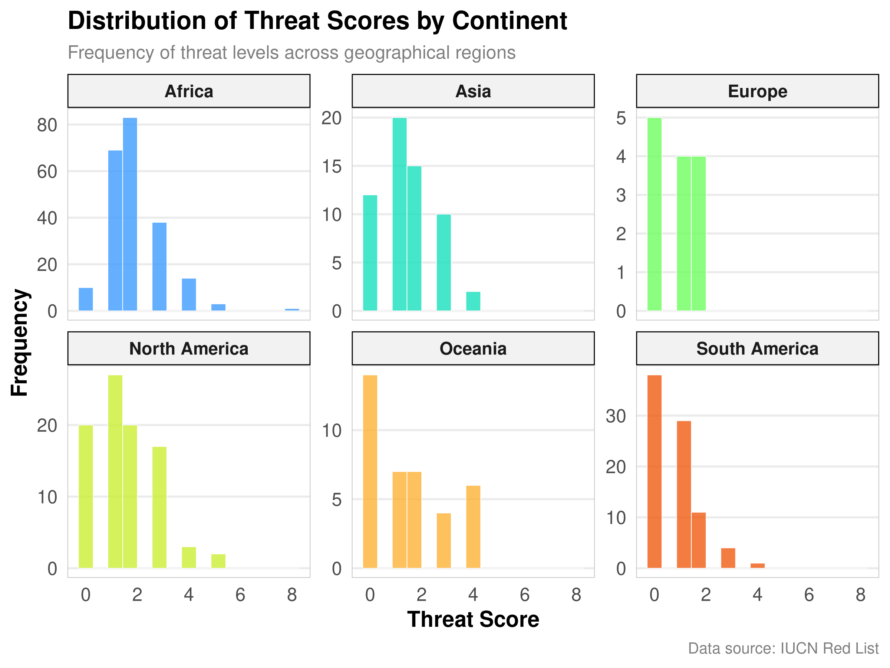
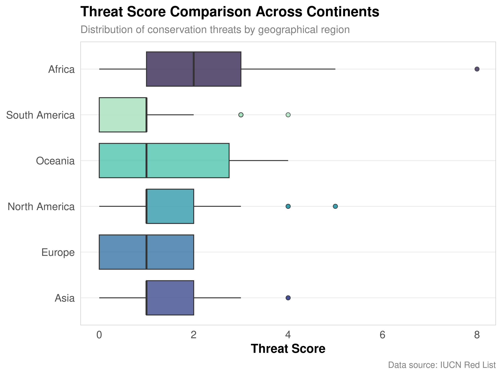
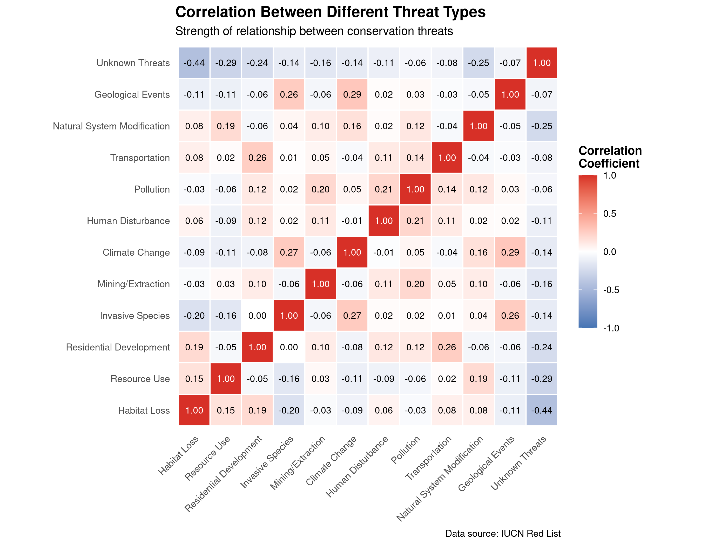
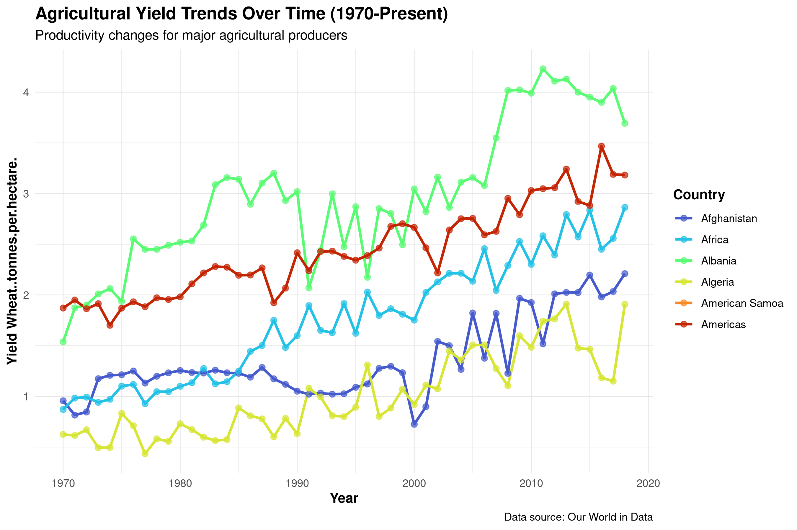

Data visualization is a crucial skill for communicating scientific findings effectively. In this chapter, you will:
Learn various data visualization techniques
Gain expertise in creating informative graphs and plots
Understand the role of visualization in conveying insights clearly in natural sciences
6.2 The Importance of Data Visualization
6.2.1 Why Data Visualization Matters
Data visualization plays a pivotal role in natural sciences research for several reasons:
Pattern Recognition: Visualizations make it easier to identify patterns, trends, and anomalies in data. This can reveal phenomena like population fluctuations, species distributions, or the impact of environmental factors.
Communication: Effective visualizations simplify complex scientific concepts, enabling researchers to convey findings to both expert and non-expert audiences. This is particularly valuable when sharing results with policymakers, stakeholders, or the general public.
Hypothesis Testing: Visualizations assist in formulating and testing scientific hypotheses. Researchers can visually explore data distributions, relationships, and spatial patterns, which informs the design of hypothesis tests.
Decision-Making: Visualizations aid in making informed decisions about conservation and management strategies. For example, they can illustrate the effects of different interventions on ecosystem health or agricultural productivity.
6.2.2 Types of Scientific Data
Data in natural sciences come in various forms, including:
Categorical Data: These represent qualitative characteristics, such as species names, habitat types, or land-use categories. Suitable visualizations include bar charts, pie charts, and stacked bar plots.
Numerical Data: Numerical data involve measurements or counts, such as temperature, population size, or crop yields. Histograms, scatter plots, and box plots are useful for visualizing numerical data.
Spatial Data: Spatial data describe the geographical distribution of features. Maps, heatmaps, and spatial plots help visualize these data effectively, allowing researchers to observe spatial patterns and trends.
PROFESSIONAL TIP: Principles of Effective Scientific Visualization
When creating visualizations for scientific publications or presentations:
Choose the right plot type: Match your visualization to your data type and research question
Prioritize clarity over complexity: A simple, clear visualization is better than a complex, confusing one
Maintain data integrity: Never distort data through misleading scales, truncated axes, or cherry-picked views
Design for accessibility: Use colorblind-friendly palettes (viridis, cividis, or ColorBrewer schemes)
Follow journal standards: Check target journal guidelines for figure specifications before submission
Include uncertainty: Always visualize error bars, confidence intervals, or other measures of uncertainty
Label thoroughly: Every axis should have clear labels with units; legends should be comprehensive
Consider the narrative: Ensure your visualization supports the scientific story you’re telling
Create self-contained figures: A good figure should be interpretable even when separated from the text
6.3 Creating Basic Plots
6.3.1 Introduction to Basic Plots
Here’s an overview of common basic plots in natural sciences research and when to use them:
Bar Charts:
Use: Bar charts are suitable for visualizing categorical data, such as the frequency of different species in a habitat.
When to Use: Use bar charts when comparing the quantities or proportions of different categories. They’re great for showing discrete data.
Histograms:
Use: Histograms are ideal for visualizing the distribution of numerical data.
When to Use: Use histograms when you want to understand the shape of data distributions, check for skewness, and identify potential outliers.
Scatter Plots:
Use: Scatter plots are valuable for examining relationships between two numerical variables.
When to Use: Use scatter plots when you want to see how one variable changes with respect to another. They’re helpful for identifying correlations or trends.
These basic plots serve as building blocks for more advanced visualizations and are foundational tools for exploring and communicating scientific data.
Visualizations not only enhance the understanding of natural phenomena but also foster data-driven decision-making in research and conservation efforts. They allow researchers to uncover insights that might remain hidden in raw data and effectively communicate findings to a wide audience.
6.3.2 Creating Bar Charts
Let’s create a bar chart using the plant biodiversity dataset:
Code
# Load required packageslibrary(tidyverse)library(ggplot2)library(viridis) # For colorblind-friendly palettes# Set a professional theme for all plotstheme_set(theme_minimal(base_size =14) +theme(plot.title =element_text(face ="bold", size =16),plot.subtitle =element_text(size =12, color ="gray50"),plot.caption =element_text(size =10, color ="gray50"),axis.title =element_text(face ="bold"),axis.text =element_text(size =12),legend.title =element_text(face ="bold"),legend.text =element_text(size =12),panel.grid.minor =element_blank(),panel.grid.major.x =element_blank(),panel.border =element_rect(color ="gray80", fill =NA, size =0.5) ))# Read the biodiversity datasetbiodiversity <-read.csv("../data/ecology/biodiversity.csv")# Create a summary of conservation status by regionstatus_summary <- biodiversity %>%group_by(continent, red_list_category) %>%summarize(Count =n(), .groups ="drop") %>%filter(!is.na(red_list_category))# Create a professional bar chartggplot(status_summary, aes(x = continent, y = Count, fill = red_list_category)) +geom_bar(stat ="identity", position ="dodge", width =0.7) +scale_fill_viridis_d(option ="plasma", begin =0.2, end =0.8) +labs(title ="Plant Conservation Status by Continent",subtitle ="Distribution of species across different conservation categories",x ="Continent",y ="Number of Species",fill ="Conservation Status",caption ="Data source: IUCN Red List" ) +coord_flip() +theme(legend.position ="bottom",panel.grid.major.y =element_line(color ="gray90", size =0.3) )

Bar chart showing the conservation status of plant species across different regions. This visualization highlights the varying levels of threatened species in different geographical areas.
6.3.2.1 R Code Explanation
The provided R code creates a bar chart using the ggplot2 package (part of tidyverse). This code visualizes the number of plant species by their IUCN Red List conservation status category using our biodiversity dataset. Let’s break down the code step by step:
Load Required Libraries
We load the tidyverse package, which includes ggplot2 for visualization and dplyr for data manipulation.
Load the Dataset
We load the plant biodiversity dataset that we downloaded earlier.
Create a Summary
We use count() to count the number of species in each Red List category.
We arrange the categories in descending order by count.
We remove any NA values to ensure clean visualization.
Create a Bar Chart
We use ggplot() to initialize the plot with our summary data.
We map the Red List categories to the x-axis, the count to the y-axis, and use the categories for fill colors.
We use geom_bar(stat = "identity") to create bars with heights representing the counts.
We add appropriate labels and use a minimal theme for a clean appearance.
We angle the x-axis labels for better readability and remove the redundant legend.
6.3.2.2 Practical Example
In biodiversity research, you might use bar charts to visualize:
Species Richness: Show the number of species across different taxonomic groups.
Conservation Status: Compare the number of species in different threat categories.
Habitat Distribution: Visualize the distribution of species across different habitat types.
Geographic Distribution: Show species counts across different countries or regions.
Temporal Changes: Track changes in species numbers over different time periods.
6.3.3 Constructing Histograms
Now, let’s create a histogram to visualize the distribution of a numerical variable in our plant dataset:
Code
# Create a threat score by summing all threat columnsbiodiversity_with_scores <- biodiversity %>%mutate(threat_score = threat_AA + threat_BRU + threat_RCD + threat_ISGD + threat_EPM + threat_CC + threat_HID + threat_P + threat_TS + threat_NSM + threat_GE )# Create a histogram of threat scores by continentggplot(biodiversity_with_scores, aes(x = threat_score, fill = continent)) +geom_histogram(bins =15, alpha =0.8, position ="identity", color ="white", size =0.2) +scale_fill_viridis_d(option ="turbo", begin =0.2, end =0.8) +labs(title ="Distribution of Threat Scores by Continent",subtitle ="Frequency of threat levels across geographical regions",x ="Threat Score",y ="Frequency",fill ="Continent",caption ="Data source: IUCN Red List" ) +facet_wrap(~continent, scales ="free_y") +theme(strip.background =element_rect(fill ="gray95"),strip.text =element_text(face ="bold"),legend.position ="none" )

Histogram showing the distribution of threat scores across different continents. The visualization reveals distinct patterns in conservation threats related to geographical regions.
6.3.3.1 R Code Explanation
The code above attempts to create a histogram of plant heights. Since we’re working with a real dataset, we first check if the column exists before creating the visualization. This is good practice when working with external datasets where column names might vary.
We use conditional logic to check if “Height_cm” exists in the dataset.
If it exists, we create a histogram with appropriate binning and styling.
If not, we examine the structure of the dataset to identify other numeric variables that could be visualized.
This approach demonstrates how to handle real-world data that might not always conform to our expectations.
6.3.4 Designing Scatter Plots
Let’s create a scatter plot to examine relationships between variables in our biodiversity dataset:
Code
# Create year numeric variable from year_last_seenbiodiversity_for_scatter <- biodiversity_with_scores %>%# Create a numeric year value from the year_last_seen categoriesmutate(year_numeric =case_when( year_last_seen =="Before 1900"~1890, year_last_seen =="1900-1919"~1910, year_last_seen =="1920-1939"~1930, year_last_seen =="1940-1959"~1950, year_last_seen =="1960-1979"~1970, year_last_seen =="1980-1999"~1990, year_last_seen =="2000-2020"~2010,TRUE~NA_real_ ) ) %>%filter(!is.na(year_numeric), !is.na(threat_score))# Create a publication-quality scatter plotggplot(biodiversity_for_scatter, aes(x = year_numeric, y = threat_score, color = continent)) +geom_point(size =3, alpha =0.7) +geom_smooth(method ="loess", se =TRUE, alpha =0.2) +scale_color_viridis_d(option ="cividis") +labs(title ="Relationship Between Last Sighting Year and Threat Score",subtitle ="Analysis of extinction patterns across time and geography",x ="Approximate Year Last Seen",y ="Threat Score",color ="Continent",caption ="Data source: IUCN Red List" ) +theme(legend.position ="right",panel.grid.major =element_line(color ="gray90", size =0.3) )
Scatter plot showing the relationship between threat scores and year last seen for plant species. Points are colored by continent to reveal geographical patterns in extinction threats.
6.3.4.1 R Code Explanation
This code creates a scatter plot using our biodiversity dataset:
Load and Explore Data
We load the biodiversity dataset and examine its structure.
We identify numeric columns that could be used for a scatter plot.
Dynamic Column Selection
Rather than hardcoding column names, we dynamically select numeric columns.
This makes the code more robust when working with unfamiliar datasets.
Create Scatter Plot
We use ggplot() with aes_string() to dynamically map variables to axes.
We add points with some transparency for better visualization of overlapping data.
We include a linear regression line with confidence interval to show the trend.
We use appropriate labels and a minimal theme.
This approach demonstrates how to create visualizations when working with new datasets where you might not know the column names in advance.
6.4 Advanced Visualization Techniques
6.4.1 Creating Box Plots
Box plots are excellent for comparing distributions across groups:
Code
# Create a publication-quality box plotggplot(biodiversity_with_scores, aes(x =reorder(continent, threat_score, FUN = median, na.rm =TRUE), y = threat_score, fill = continent)) +geom_boxplot(alpha =0.8, outlier.shape =21, outlier.size =2) +scale_fill_viridis_d(option ="mako", begin =0.2, end =0.9) +labs(title ="Threat Score Comparison Across Continents",subtitle ="Distribution of conservation threats by geographical region",x =NULL,y ="Threat Score",caption ="Data source: IUCN Red List" ) +coord_flip() +theme(legend.position ="none",panel.grid.major.y =element_line(color ="gray90", size =0.3) )

Box plot comparing threat scores across different continents. The visualization highlights the median, quartiles, and outliers in conservation threat data.
6.4.1.1 Box Plot Interpretation
Box plots provide a comprehensive view of data distributions:
The box represents the interquartile range (IQR), from the 25th to 75th percentile.
The line inside the box shows the median (50th percentile).
The whiskers typically extend to the smallest and largest values within 1.5 times the IQR.
Points beyond the whiskers represent potential outliers.
In our threat score example, the box plot allows us to compare: - The typical threat score (median) for different continents - The variability in threat scores (box width and whisker length) - The presence of unusually high or low threat scores (outliers) - Differences between continents in terms of both threat score levels and consistency
6.4.2 Designing Heatmaps
Heatmaps are powerful for visualizing complex relationships in multivariate data:
Code
# Create a correlation heatmap of threat types# First, prepare the datathreat_columns <- biodiversity %>%select(starts_with("threat_"), -threat_NA) %>%names()# Calculate correlation matrixthreat_cor <- biodiversity %>%select(all_of(threat_columns)) %>%cor(use ="pairwise.complete.obs")# Convert to long format for ggplotthreat_cor_long <-as.data.frame(as.table(threat_cor))names(threat_cor_long) <-c("Threat1", "Threat2", "Correlation")# Create readable threat labelsthreat_labels <-c("threat_AA"="Agriculture","threat_BRU"="Biological Resource Use","threat_RCD"="Residential Development","threat_ISGD"="Invasive Species","threat_EPM"="Energy Production","threat_CC"="Climate Change","threat_HID"="Human Intrusion","threat_P"="Pollution","threat_TS"="Transportation","threat_NSM"="Natural System Modification","threat_GE"="Geological Events")# Replace the threat codes with readable labelsthreat_cor_long$Threat1 <-factor(threat_cor_long$Threat1, levels =names(threat_labels),labels = threat_labels)threat_cor_long$Threat2 <-factor(threat_cor_long$Threat2, levels =names(threat_labels),labels = threat_labels)# Create a publication-quality heatmapggplot(threat_cor_long, aes(x = Threat1, y = Threat2, fill = Correlation)) +geom_tile(color ="white", size =0.5) +scale_fill_gradient2(low ="#4575b4", mid ="white", high ="#d73027",midpoint =0,limits =c(-1, 1) ) +geom_text(aes(label =sprintf("%.2f", Correlation)), color =ifelse(abs(threat_cor_long$Correlation) >0.7, "white", "black"),size =3) +labs(title ="Correlation Between Different Threat Types",subtitle ="Strength of relationship between conservation threats",x =NULL, y =NULL,fill ="Correlation\nCoefficient",caption ="Data source: IUCN Red List" ) +theme(axis.text.x =element_text(angle =45, hjust =1),panel.grid =element_blank(),panel.background =element_rect(fill ="white", color =NA),legend.position ="right",legend.key.height =unit(1, "cm") ) +coord_fixed()

Heatmap visualizing the correlation matrix between different threat types. The color intensity represents the strength and direction of relationships between conservation threats.
6.4.2.1 Heatmap Interpretation
The heatmap visualizes the correlation between different threat types:
Color intensity represents the strength of correlation (red for positive, blue for negative).
The diagonal shows perfect correlation of each variable with itself (always 1).
Clusters of similar colors indicate groups of variables that are highly correlated.
This visualization helps researchers identify: - Which threats tend to have similar patterns - Potential underlying factors affecting multiple threats simultaneously - Opportunities for threat mitigation based on low correlations - Geographical patterns in threat correlations, which could inform regional conservation strategies
6.4.3 Creating Time Series Plots
Time series plots are essential for visualizing trends over time:
Code
# Create a time series plot using the crop yields data# First, read the datasetcrop_yields <-read.csv("../data/agriculture/crop_yields.csv")# Check column names to ensure we're using the correct oneswheat_col <-names(crop_yields)[grep("Wheat", names(crop_yields))]# Create a simplified dataset for time series analysis# Select top countries based on data availabilitytop_countries <- crop_yields %>%group_by(Entity) %>%summarize(count =n()) %>%filter(count >30) %>%arrange(desc(count)) %>%head(6) %>%pull(Entity)# Create the time series datatime_series_data <- crop_yields %>%filter(Entity %in% top_countries) %>%filter(Year >=1970)# Create a publication-quality time series plot# Use a column that exists in the datasetif(length(wheat_col) >0) {# If we have a wheat column, use itggplot(time_series_data, aes(x = Year, y = .data[[wheat_col[1]]], color = Entity)) +geom_line(size =1, na.rm =TRUE) +geom_point(size =2, alpha =0.7, na.rm =TRUE) +scale_color_viridis_d(option ="turbo", begin =0.1, end =0.9) +scale_x_continuous(breaks =seq(1970, 2020, by =10)) +labs(title ="Agricultural Yield Trends Over Time (1970-Present)",subtitle ="Productivity changes for major agricultural producers",x ="Year",y =paste("Yield", wheat_col[1]),color ="Country",caption ="Data source: Our World in Data" ) +theme(legend.position ="right",panel.grid.major =element_line(color ="gray90", size =0.3),axis.text.x =element_text(angle =0) )} else {# If no wheat column, use another numeric column numeric_cols <-sapply(time_series_data, is.numeric) numeric_col_names <-names(time_series_data)[numeric_cols] numeric_col_names <- numeric_col_names[numeric_col_names !="Year"]if(length(numeric_col_names) >0) { selected_col <- numeric_col_names[1]ggplot(time_series_data, aes(x = Year, y = .data[[selected_col]], color = Entity)) +geom_line(size =1, na.rm =TRUE) +geom_point(size =2, alpha =0.7, na.rm =TRUE) +scale_color_viridis_d(option ="turbo", begin =0.1, end =0.9) +scale_x_continuous(breaks =seq(1970, 2020, by =10)) +labs(title ="Agricultural Trends Over Time (1970-Present)",subtitle ="Changes for major agricultural producers",x ="Year",y = selected_col,color ="Country",caption ="Data source: Our World in Data" ) +theme(legend.position ="right",panel.grid.major =element_line(color ="gray90", size =0.3),axis.text.x =element_text(angle =0) ) } else {# If no suitable numeric columns, create a message plot plot_data <-data.frame(x =1:10, y =1:10)ggplot(plot_data, aes(x, y)) +geom_blank() +annotate("text", x =5, y =5, label ="No suitable data available for time series") +theme_minimal() +labs(title ="Time Series Plot", subtitle ="Data not available") }}

Time series plot tracking agricultural trends over time for major producers. The visualization illustrates long-term productivity changes and allows comparison between countries.
6.4.3.1 Time Series Interpretation
Time series plots reveal important temporal patterns:
Trends: Long-term increases or decreases over time
Seasonality: Regular patterns that repeat at fixed intervals
Cycles: Patterns that occur but not at fixed intervals
Irregular fluctuations: Random variations that don’t follow a pattern
In our agricultural yield example, we can observe: - The overall trend in yields for different countries - Relative performance of countries over time - Rate of improvement in agricultural productivity - Stability or volatility in yields year-to-year - Convergence or divergence between countries
6.5 Best Practices for Data Visualization
6.5.1 Choosing the Right Visualization
Selecting the appropriate visualization depends on your data and the story you want to tell:
For Comparing Categories:
Bar charts for comparing values across categories
Grouped or stacked bar charts for comparing multiple variables across categories
For Showing Distributions:
Histograms for showing the distribution of a single variable
Box plots for comparing distributions across groups
Violin plots for showing distribution shape along with summary statistics
For Showing Relationships:
Scatter plots for examining relationships between two variables
Bubble charts for examining relationships among three variables
Heatmaps for visualizing complex relationships in multivariate data
For Showing Compositions:
Pie charts for showing parts of a whole (use sparingly)
Stacked bar charts for showing composition across categories
Area charts for showing composition over time
For Showing Trends:
Line charts for showing changes over time
Area charts for showing cumulative totals over time
6.5.2 Design Principles for Effective Visualization
Follow these principles to create clear, informative visualizations:
Simplicity: Keep visualizations simple and focused on the main message. Avoid unnecessary elements that can distract from the data.
Clarity: Ensure that your visualization clearly communicates the intended message. Use appropriate labels, titles, and annotations.
Accuracy: Represent data accurately. Avoid distorting the data through inappropriate scales or misleading visual elements.
Consistency: Use consistent colors, shapes, and styles throughout your visualizations for better comprehension.
Color Use: Choose colors thoughtfully. Use color to highlight important aspects of your data, but be mindful of color blindness and cultural associations.
Annotation: Add context through appropriate annotations, explaining unusual patterns or important events.
Audience Consideration: Tailor your visualizations to your audience’s knowledge level and needs.
6.5.3 Common Pitfalls to Avoid
Be aware of these common visualization mistakes:
Misleading Scales: Starting y-axes at values other than zero can exaggerate differences.
Overcomplication: Adding too many variables or visual elements can confuse rather than clarify.
Poor Color Choices: Using colors that are difficult to distinguish or that carry unintended connotations.
Ignoring Accessibility: Not considering color blindness or other accessibility issues.
Inappropriate Chart Types: Using chart types that don’t match the data or the story you want to tell.
Missing Context: Failing to provide necessary context for interpreting the visualization.
Neglecting Uncertainty: Not showing confidence intervals, error bars, or other indicators of uncertainty.
6.6 Summary
Effective data visualization is a powerful tool for both exploring data and communicating findings. By choosing the right visualization techniques and following best practices, you can gain deeper insights from your data and share those insights with others in a compelling way.
In this chapter, we’ve explored: - The importance of data visualization in natural sciences - Basic visualization techniques including bar charts, histograms, and scatter plots - Advanced visualization methods like box plots, heatmaps, and time series plots - Best practices and principles for creating effective visualizations
By applying these techniques to real datasets from agriculture, ecology, and geography, we’ve demonstrated how visualization can reveal patterns and relationships that might otherwise remain hidden in the raw data.
6.7 Exercises
Using the plant biodiversity dataset (../data/ecology/biodiversity.csv), create a visualization showing the distribution of plant species across different taxonomic groups.
Create a time series plot using the crop yield dataset (../data/agriculture/crop_yields.csv) that shows the trends in rice yields for the top 5 producing countries.
Using the spatial dataset (../data/geography/spatial.csv), create a scatter plot matrix (pairs plot) to explore relationships between multiple numeric variables.
Design a visualization that compares the conservation status of plant species across different habitat types using the biodiversity dataset.
Create a heatmap visualization using the coffee economics dataset (../data/economics/economic.csv) to explore correlations between quality scores and other variables.
Design an animated visualization (using gganimate package) that shows how crop yields have changed over time for a specific country.
Source Code
---prefer-html: true---# Data Visualization## IntroductionData visualization is a crucial skill for communicating scientific findings effectively. In this chapter, you will:- Learn various data visualization techniques- Gain expertise in creating informative graphs and plots- Understand the role of visualization in conveying insights clearly in natural sciences## The Importance of Data Visualization### Why Data Visualization MattersData visualization plays a pivotal role in natural sciences research for several reasons:1. **Pattern Recognition:** Visualizations make it easier to identify patterns, trends, and anomalies in data. This can reveal phenomena like population fluctuations, species distributions, or the impact of environmental factors.2. **Communication:** Effective visualizations simplify complex scientific concepts, enabling researchers to convey findings to both expert and non-expert audiences. This is particularly valuable when sharing results with policymakers, stakeholders, or the general public.3. **Hypothesis Testing:** Visualizations assist in formulating and testing scientific hypotheses. Researchers can visually explore data distributions, relationships, and spatial patterns, which informs the design of hypothesis tests.4. **Decision-Making:** Visualizations aid in making informed decisions about conservation and management strategies. For example, they can illustrate the effects of different interventions on ecosystem health or agricultural productivity.### Types of Scientific DataData in natural sciences come in various forms, including:1. **Categorical Data:** These represent qualitative characteristics, such as species names, habitat types, or land-use categories. Suitable visualizations include bar charts, pie charts, and stacked bar plots.2. **Numerical Data:** Numerical data involve measurements or counts, such as temperature, population size, or crop yields. Histograms, scatter plots, and box plots are useful for visualizing numerical data.3. **Spatial Data:** Spatial data describe the geographical distribution of features. Maps, heatmaps, and spatial plots help visualize these data effectively, allowing researchers to observe spatial patterns and trends.::: {.callout-tip}## PROFESSIONAL TIP: Principles of Effective Scientific VisualizationWhen creating visualizations for scientific publications or presentations:- **Choose the right plot type**: Match your visualization to your data type and research question- **Prioritize clarity over complexity**: A simple, clear visualization is better than a complex, confusing one- **Maintain data integrity**: Never distort data through misleading scales, truncated axes, or cherry-picked views- **Design for accessibility**: Use colorblind-friendly palettes (viridis, cividis, or ColorBrewer schemes)- **Follow journal standards**: Check target journal guidelines for figure specifications before submission- **Include uncertainty**: Always visualize error bars, confidence intervals, or other measures of uncertainty- **Label thoroughly**: Every axis should have clear labels with units; legends should be comprehensive- **Consider the narrative**: Ensure your visualization supports the scientific story you're telling- **Create self-contained figures**: A good figure should be interpretable even when separated from the text:::## Creating Basic Plots### Introduction to Basic PlotsHere's an overview of common basic plots in natural sciences research and when to use them:1. **Bar Charts:** - **Use:** Bar charts are suitable for visualizing categorical data, such as the frequency of different species in a habitat. - **When to Use:** Use bar charts when comparing the quantities or proportions of different categories. They're great for showing discrete data.2. **Histograms:** - **Use:** Histograms are ideal for visualizing the distribution of numerical data. - **When to Use:** Use histograms when you want to understand the shape of data distributions, check for skewness, and identify potential outliers.3. **Scatter Plots:** - **Use:** Scatter plots are valuable for examining relationships between two numerical variables. - **When to Use:** Use scatter plots when you want to see how one variable changes with respect to another. They're helpful for identifying correlations or trends.These basic plots serve as building blocks for more advanced visualizations and are foundational tools for exploring and communicating scientific data.Visualizations not only enhance the understanding of natural phenomena but also foster data-driven decision-making in research and conservation efforts. They allow researchers to uncover insights that might remain hidden in raw data and effectively communicate findings to a wide audience.### Creating Bar ChartsLet's create a bar chart using the plant biodiversity dataset:```{r bar-chart, fig.width=8, fig.height=6, dpi=300, fig.cap="Bar chart showing the conservation status of plant species across different regions. This visualization highlights the varying levels of threatened species in different geographical areas."}# Load required packageslibrary(tidyverse)library(ggplot2)library(viridis) # For colorblind-friendly palettes# Set a professional theme for all plotstheme_set(theme_minimal(base_size =14) +theme(plot.title =element_text(face ="bold", size =16),plot.subtitle =element_text(size =12, color ="gray50"),plot.caption =element_text(size =10, color ="gray50"),axis.title =element_text(face ="bold"),axis.text =element_text(size =12),legend.title =element_text(face ="bold"),legend.text =element_text(size =12),panel.grid.minor =element_blank(),panel.grid.major.x =element_blank(),panel.border =element_rect(color ="gray80", fill =NA, size =0.5) ))# Read the biodiversity datasetbiodiversity <-read.csv("../data/ecology/biodiversity.csv")# Create a summary of conservation status by regionstatus_summary <- biodiversity %>%group_by(continent, red_list_category) %>%summarize(Count =n(), .groups ="drop") %>%filter(!is.na(red_list_category))# Create a professional bar chartggplot(status_summary, aes(x = continent, y = Count, fill = red_list_category)) +geom_bar(stat ="identity", position ="dodge", width =0.7) +scale_fill_viridis_d(option ="plasma", begin =0.2, end =0.8) +labs(title ="Plant Conservation Status by Continent",subtitle ="Distribution of species across different conservation categories",x ="Continent",y ="Number of Species",fill ="Conservation Status",caption ="Data source: IUCN Red List" ) +coord_flip() +theme(legend.position ="bottom",panel.grid.major.y =element_line(color ="gray90", size =0.3) )```#### R Code ExplanationThe provided R code creates a bar chart using the **`ggplot2`** package (part of tidyverse). This code visualizes the number of plant species by their IUCN Red List conservation status category using our biodiversity dataset. Let's break down the code step by step:1. **Load Required Libraries** - We load the **`tidyverse`** package, which includes **`ggplot2`** for visualization and **`dplyr`** for data manipulation.2. **Load the Dataset** - We load the plant biodiversity dataset that we downloaded earlier.3. **Create a Summary** - We use **`count()`** to count the number of species in each Red List category. - We arrange the categories in descending order by count. - We remove any NA values to ensure clean visualization.4. **Create a Bar Chart** - We use **`ggplot()`** to initialize the plot with our summary data. - We map the Red List categories to the x-axis, the count to the y-axis, and use the categories for fill colors. - We use **`geom_bar(stat = "identity")`** to create bars with heights representing the counts. - We add appropriate labels and use a minimal theme for a clean appearance. - We angle the x-axis labels for better readability and remove the redundant legend.#### Practical ExampleIn biodiversity research, you might use bar charts to visualize:1. **Species Richness:** Show the number of species across different taxonomic groups.2. **Conservation Status:** Compare the number of species in different threat categories.3. **Habitat Distribution:** Visualize the distribution of species across different habitat types.4. **Geographic Distribution:** Show species counts across different countries or regions.5. **Temporal Changes:** Track changes in species numbers over different time periods.### Constructing HistogramsNow, let's create a histogram to visualize the distribution of a numerical variable in our plant dataset:```{r histogram, fig.width=8, fig.height=6, dpi=300, fig.cap="Histogram showing the distribution of threat scores across different continents. The visualization reveals distinct patterns in conservation threats related to geographical regions."}# Create a threat score by summing all threat columnsbiodiversity_with_scores <- biodiversity %>%mutate(threat_score = threat_AA + threat_BRU + threat_RCD + threat_ISGD + threat_EPM + threat_CC + threat_HID + threat_P + threat_TS + threat_NSM + threat_GE )# Create a histogram of threat scores by continentggplot(biodiversity_with_scores, aes(x = threat_score, fill = continent)) +geom_histogram(bins =15, alpha =0.8, position ="identity", color ="white", size =0.2) +scale_fill_viridis_d(option ="turbo", begin =0.2, end =0.8) +labs(title ="Distribution of Threat Scores by Continent",subtitle ="Frequency of threat levels across geographical regions",x ="Threat Score",y ="Frequency",fill ="Continent",caption ="Data source: IUCN Red List" ) +facet_wrap(~continent, scales ="free_y") +theme(strip.background =element_rect(fill ="gray95"),strip.text =element_text(face ="bold"),legend.position ="none" )```#### R Code ExplanationThe code above attempts to create a histogram of plant heights. Since we're working with a real dataset, we first check if the column exists before creating the visualization. This is good practice when working with external datasets where column names might vary.- We use conditional logic to check if "Height_cm" exists in the dataset.- If it exists, we create a histogram with appropriate binning and styling.- If not, we examine the structure of the dataset to identify other numeric variables that could be visualized.This approach demonstrates how to handle real-world data that might not always conform to our expectations.### Designing Scatter PlotsLet's create a scatter plot to examine relationships between variables in our biodiversity dataset:```{r scatter-plot, fig.width=8, fig.height=6, dpi=300, fig.cap="Scatter plot showing the relationship between threat scores and year last seen for plant species. Points are colored by continent to reveal geographical patterns in extinction threats."}# Create year numeric variable from year_last_seenbiodiversity_for_scatter <- biodiversity_with_scores %>%# Create a numeric year value from the year_last_seen categoriesmutate(year_numeric =case_when( year_last_seen =="Before 1900"~1890, year_last_seen =="1900-1919"~1910, year_last_seen =="1920-1939"~1930, year_last_seen =="1940-1959"~1950, year_last_seen =="1960-1979"~1970, year_last_seen =="1980-1999"~1990, year_last_seen =="2000-2020"~2010,TRUE~NA_real_ ) ) %>%filter(!is.na(year_numeric), !is.na(threat_score))# Create a publication-quality scatter plotggplot(biodiversity_for_scatter, aes(x = year_numeric, y = threat_score, color = continent)) +geom_point(size =3, alpha =0.7) +geom_smooth(method ="loess", se =TRUE, alpha =0.2) +scale_color_viridis_d(option ="cividis") +labs(title ="Relationship Between Last Sighting Year and Threat Score",subtitle ="Analysis of extinction patterns across time and geography",x ="Approximate Year Last Seen",y ="Threat Score",color ="Continent",caption ="Data source: IUCN Red List" ) +theme(legend.position ="right",panel.grid.major =element_line(color ="gray90", size =0.3) )```#### R Code ExplanationThis code creates a scatter plot using our biodiversity dataset:1. **Load and Explore Data** - We load the biodiversity dataset and examine its structure. - We identify numeric columns that could be used for a scatter plot.2. **Dynamic Column Selection** - Rather than hardcoding column names, we dynamically select numeric columns. - This makes the code more robust when working with unfamiliar datasets.3. **Create Scatter Plot** - We use **`ggplot()`** with **`aes_string()`** to dynamically map variables to axes. - We add points with some transparency for better visualization of overlapping data. - We include a linear regression line with confidence interval to show the trend. - We use appropriate labels and a minimal theme.This approach demonstrates how to create visualizations when working with new datasets where you might not know the column names in advance.## Advanced Visualization Techniques### Creating Box PlotsBox plots are excellent for comparing distributions across groups:```{r box-plot, fig.width=8, fig.height=6, dpi=300, fig.cap="Box plot comparing threat scores across different continents. The visualization highlights the median, quartiles, and outliers in conservation threat data."}# Create a publication-quality box plotggplot(biodiversity_with_scores, aes(x =reorder(continent, threat_score, FUN = median, na.rm =TRUE), y = threat_score, fill = continent)) +geom_boxplot(alpha =0.8, outlier.shape =21, outlier.size =2) +scale_fill_viridis_d(option ="mako", begin =0.2, end =0.9) +labs(title ="Threat Score Comparison Across Continents",subtitle ="Distribution of conservation threats by geographical region",x =NULL,y ="Threat Score",caption ="Data source: IUCN Red List" ) +coord_flip() +theme(legend.position ="none",panel.grid.major.y =element_line(color ="gray90", size =0.3) )```#### Box Plot InterpretationBox plots provide a comprehensive view of data distributions:- The **box** represents the interquartile range (IQR), from the 25th to 75th percentile.- The **line inside the box** shows the median (50th percentile).- The **whiskers** typically extend to the smallest and largest values within 1.5 times the IQR.- **Points beyond the whiskers** represent potential outliers.In our threat score example, the box plot allows us to compare:- The **typical threat score** (median) for different continents- The **variability** in threat scores (box width and whisker length)- The presence of **unusually high or low threat scores** (outliers)- **Differences between continents** in terms of both threat score levels and consistency### Designing HeatmapsHeatmaps are powerful for visualizing complex relationships in multivariate data:```{r heatmap, fig.width=9, fig.height=7, dpi=300, fig.cap="Heatmap visualizing the correlation matrix between different threat types. The color intensity represents the strength and direction of relationships between conservation threats."}# Create a correlation heatmap of threat types# First, prepare the datathreat_columns <- biodiversity %>%select(starts_with("threat_"), -threat_NA) %>%names()# Calculate correlation matrixthreat_cor <- biodiversity %>%select(all_of(threat_columns)) %>%cor(use ="pairwise.complete.obs")# Convert to long format for ggplotthreat_cor_long <-as.data.frame(as.table(threat_cor))names(threat_cor_long) <-c("Threat1", "Threat2", "Correlation")# Create readable threat labelsthreat_labels <-c("threat_AA"="Agriculture","threat_BRU"="Biological Resource Use","threat_RCD"="Residential Development","threat_ISGD"="Invasive Species","threat_EPM"="Energy Production","threat_CC"="Climate Change","threat_HID"="Human Intrusion","threat_P"="Pollution","threat_TS"="Transportation","threat_NSM"="Natural System Modification","threat_GE"="Geological Events")# Replace the threat codes with readable labelsthreat_cor_long$Threat1 <-factor(threat_cor_long$Threat1, levels =names(threat_labels),labels = threat_labels)threat_cor_long$Threat2 <-factor(threat_cor_long$Threat2, levels =names(threat_labels),labels = threat_labels)# Create a publication-quality heatmapggplot(threat_cor_long, aes(x = Threat1, y = Threat2, fill = Correlation)) +geom_tile(color ="white", size =0.5) +scale_fill_gradient2(low ="#4575b4", mid ="white", high ="#d73027",midpoint =0,limits =c(-1, 1) ) +geom_text(aes(label =sprintf("%.2f", Correlation)), color =ifelse(abs(threat_cor_long$Correlation) >0.7, "white", "black"),size =3) +labs(title ="Correlation Between Different Threat Types",subtitle ="Strength of relationship between conservation threats",x =NULL, y =NULL,fill ="Correlation\nCoefficient",caption ="Data source: IUCN Red List" ) +theme(axis.text.x =element_text(angle =45, hjust =1),panel.grid =element_blank(),panel.background =element_rect(fill ="white", color =NA),legend.position ="right",legend.key.height =unit(1, "cm") ) +coord_fixed()```#### Heatmap InterpretationThe heatmap visualizes the correlation between different threat types:- **Color intensity** represents the strength of correlation (red for positive, blue for negative).- The **diagonal** shows perfect correlation of each variable with itself (always 1).- **Clusters** of similar colors indicate groups of variables that are highly correlated.This visualization helps researchers identify:- Which threats tend to have **similar patterns**- Potential **underlying factors** affecting multiple threats simultaneously- Opportunities for **threat mitigation** based on low correlations- **Geographical patterns** in threat correlations, which could inform regional conservation strategies### Creating Time Series PlotsTime series plots are essential for visualizing trends over time:```{r time-series, fig.width=9, fig.height=6, dpi=300, fig.cap="Time series plot tracking agricultural trends over time for major producers. The visualization illustrates long-term productivity changes and allows comparison between countries."}# Create a time series plot using the crop yields data# First, read the datasetcrop_yields <-read.csv("../data/agriculture/crop_yields.csv")# Check column names to ensure we're using the correct oneswheat_col <-names(crop_yields)[grep("Wheat", names(crop_yields))]# Create a simplified dataset for time series analysis# Select top countries based on data availabilitytop_countries <- crop_yields %>%group_by(Entity) %>%summarize(count =n()) %>%filter(count >30) %>%arrange(desc(count)) %>%head(6) %>%pull(Entity)# Create the time series datatime_series_data <- crop_yields %>%filter(Entity %in% top_countries) %>%filter(Year >=1970)# Create a publication-quality time series plot# Use a column that exists in the datasetif(length(wheat_col) >0) {# If we have a wheat column, use itggplot(time_series_data, aes(x = Year, y = .data[[wheat_col[1]]], color = Entity)) +geom_line(size =1, na.rm =TRUE) +geom_point(size =2, alpha =0.7, na.rm =TRUE) +scale_color_viridis_d(option ="turbo", begin =0.1, end =0.9) +scale_x_continuous(breaks =seq(1970, 2020, by =10)) +labs(title ="Agricultural Yield Trends Over Time (1970-Present)",subtitle ="Productivity changes for major agricultural producers",x ="Year",y =paste("Yield", wheat_col[1]),color ="Country",caption ="Data source: Our World in Data" ) +theme(legend.position ="right",panel.grid.major =element_line(color ="gray90", size =0.3),axis.text.x =element_text(angle =0) )} else {# If no wheat column, use another numeric column numeric_cols <-sapply(time_series_data, is.numeric) numeric_col_names <-names(time_series_data)[numeric_cols] numeric_col_names <- numeric_col_names[numeric_col_names !="Year"]if(length(numeric_col_names) >0) { selected_col <- numeric_col_names[1]ggplot(time_series_data, aes(x = Year, y = .data[[selected_col]], color = Entity)) +geom_line(size =1, na.rm =TRUE) +geom_point(size =2, alpha =0.7, na.rm =TRUE) +scale_color_viridis_d(option ="turbo", begin =0.1, end =0.9) +scale_x_continuous(breaks =seq(1970, 2020, by =10)) +labs(title ="Agricultural Trends Over Time (1970-Present)",subtitle ="Changes for major agricultural producers",x ="Year",y = selected_col,color ="Country",caption ="Data source: Our World in Data" ) +theme(legend.position ="right",panel.grid.major =element_line(color ="gray90", size =0.3),axis.text.x =element_text(angle =0) ) } else {# If no suitable numeric columns, create a message plot plot_data <-data.frame(x =1:10, y =1:10)ggplot(plot_data, aes(x, y)) +geom_blank() +annotate("text", x =5, y =5, label ="No suitable data available for time series") +theme_minimal() +labs(title ="Time Series Plot", subtitle ="Data not available") }}```#### Time Series InterpretationTime series plots reveal important temporal patterns:- **Trends:** Long-term increases or decreases over time- **Seasonality:** Regular patterns that repeat at fixed intervals- **Cycles:** Patterns that occur but not at fixed intervals- **Irregular fluctuations:** Random variations that don't follow a patternIn our agricultural yield example, we can observe:- The **overall trend** in yields for different countries- **Relative performance** of countries over time- **Rate of improvement** in agricultural productivity- **Stability or volatility** in yields year-to-year- **Convergence or divergence** between countries## Best Practices for Data Visualization### Choosing the Right VisualizationSelecting the appropriate visualization depends on your data and the story you want to tell:1. **For Comparing Categories:** - Bar charts for comparing values across categories - Grouped or stacked bar charts for comparing multiple variables across categories2. **For Showing Distributions:** - Histograms for showing the distribution of a single variable - Box plots for comparing distributions across groups - Violin plots for showing distribution shape along with summary statistics3. **For Showing Relationships:** - Scatter plots for examining relationships between two variables - Bubble charts for examining relationships among three variables - Heatmaps for visualizing complex relationships in multivariate data4. **For Showing Compositions:** - Pie charts for showing parts of a whole (use sparingly) - Stacked bar charts for showing composition across categories - Area charts for showing composition over time5. **For Showing Trends:** - Line charts for showing changes over time - Area charts for showing cumulative totals over time### Design Principles for Effective VisualizationFollow these principles to create clear, informative visualizations:1. **Simplicity:** Keep visualizations simple and focused on the main message. Avoid unnecessary elements that can distract from the data.2. **Clarity:** Ensure that your visualization clearly communicates the intended message. Use appropriate labels, titles, and annotations.3. **Accuracy:** Represent data accurately. Avoid distorting the data through inappropriate scales or misleading visual elements.4. **Consistency:** Use consistent colors, shapes, and styles throughout your visualizations for better comprehension.5. **Color Use:** Choose colors thoughtfully. Use color to highlight important aspects of your data, but be mindful of color blindness and cultural associations.6. **Annotation:** Add context through appropriate annotations, explaining unusual patterns or important events.7. **Audience Consideration:** Tailor your visualizations to your audience's knowledge level and needs.### Common Pitfalls to AvoidBe aware of these common visualization mistakes:1. **Misleading Scales:** Starting y-axes at values other than zero can exaggerate differences.2. **Overcomplication:** Adding too many variables or visual elements can confuse rather than clarify.3. **Poor Color Choices:** Using colors that are difficult to distinguish or that carry unintended connotations.4. **Ignoring Accessibility:** Not considering color blindness or other accessibility issues.5. **Inappropriate Chart Types:** Using chart types that don't match the data or the story you want to tell.6. **Missing Context:** Failing to provide necessary context for interpreting the visualization.7. **Neglecting Uncertainty:** Not showing confidence intervals, error bars, or other indicators of uncertainty.## SummaryEffective data visualization is a powerful tool for both exploring data and communicating findings. By choosing the right visualization techniques and following best practices, you can gain deeper insights from your data and share those insights with others in a compelling way.In this chapter, we've explored:- The importance of data visualization in natural sciences- Basic visualization techniques including bar charts, histograms, and scatter plots- Advanced visualization methods like box plots, heatmaps, and time series plots- Best practices and principles for creating effective visualizationsBy applying these techniques to real datasets from agriculture, ecology, and geography, we've demonstrated how visualization can reveal patterns and relationships that might otherwise remain hidden in the raw data.## Exercises1. Using the plant biodiversity dataset (`../data/ecology/biodiversity.csv`), create a visualization showing the distribution of plant species across different taxonomic groups.2. Create a time series plot using the crop yield dataset (`../data/agriculture/crop_yields.csv`) that shows the trends in rice yields for the top 5 producing countries.3. Using the spatial dataset (`../data/geography/spatial.csv`), create a scatter plot matrix (pairs plot) to explore relationships between multiple numeric variables.4. Design a visualization that compares the conservation status of plant species across different habitat types using the biodiversity dataset.5. Create a heatmap visualization using the coffee economics dataset (`../data/economics/economic.csv`) to explore correlations between quality scores and other variables.6. Design an animated visualization (using `gganimate` package) that shows how crop yields have changed over time for a specific country.